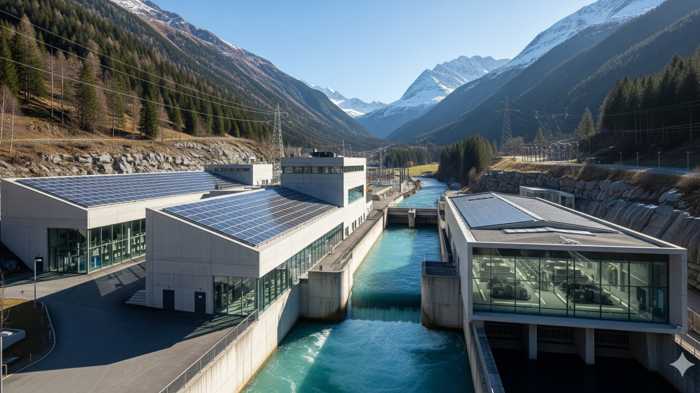

The DNA of DACH quality lies in precision. Over my 15 years of experience, I’ve learned that a long-lasting turbine stands on a meticulous foundation: alignment must be accurate to a tolerance of 0.05 mm per meter. While such details are the core of our engineering art, they are increasingly neglected in daily operations. We must reclaim this discipline to secure the asset's value for decades.
The Dilemma of Symptoms: The Leadership Challenge
In the industry, there's a silent agreement: we treat symptoms, not root causes. The classic example is wear: abrasion due to sediment is often cited to cover up cavitation—a potential design flaw. This obscures the truth and leads to recurring problems.
"Our strength lies in the discipline that secures the asset's value over decades. We must shift from transactional repairs to strategic asset guardianship."
The Bridge to the Future: Reclaiming Leadership
This is the moment for the DACH region to reclaim leadership. Not through cheaper products, but through a New Standard built on the values that made us strong: Quality, Transparency, and Trust.
1. Digital Twin & Predictive Analytics
We must create a virtual copy for every asset, collecting all data in real-time. Through AI analysis, we can predict the asset's condition and warn against impending damage. This shifts us from a reactive "it's running fine" culture to a proactive, efficient maintenance model.
2. Acoustic Monitoring
Using AI and highly sensitive microphones, we can acoustically monitor a machine's condition, analyzing vibrations and noises to detect early signs of problems like cavitation.
Visionary Leap: Blockchain-Powered Supply Chains
A visionary approach is the use of Blockchain technology to document the origin and quality of critical components. This ensures that only premium parts are used, fundamentally reinforcing the trustworthiness of DACH excellence.
Lead the Transformation
Join the network of operators adopting the new DACH quality standards. Let's discuss your strategic roadmap.
REQUEST STRATEGIC ASSESSMENT